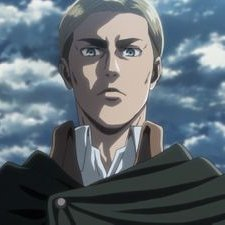

Synopsis
"That day, the human race remembered the terror of being dominated by them, and the shame of being held captive in a birdcage..." — Over 100 years ago, a natural predator of humanity appeared: the Titans, giant humanoid but mindless monsters whose sole purpose of existence seemed to be to devour humans. There was an insurmountable gap in power between them and mankind, and as a result, humanity was rapidly exterminated to the brink of extinction. The survivors responded by constructing three concentric walls: Wall Maria, Wall Rose and Wall Sina, which graced them with a century of peace. However, one day a Colossal Titan far larger than any other seen before breached the outer wall, allowing the smaller Titans to invade the human territory and forcing the survivors to retreat to the inner walls. Eren Jaeger, a boy whose mother was eaten during the invasion, vowed to wipe every last Titan off the face of the Earth, and joined the military determined to exact his revenge.
Author/Creator
Attack on Titan is a Japanese manga series written and illustrated by Hajime Isayama.
Characters
-
 Eren Yeager
Eren Yeager
- Mikasa Ackerman
-
 Armin Arlert
Armin Arlert
- Annie Lionheart
-
 Reiner Braun
Reiner Braun
-
 Bertolt Hoover
Bertolt Hoover
- Connie Springer
-
 Jean
Jean
-
 Sasha Braus
Sasha Braus
- Historia Reiss
- Levi Ackerman
-  Erwin Smith
- Hange Zoe
-
 Zeke Yeager
Zeke Yeager
- Ymir the Founder